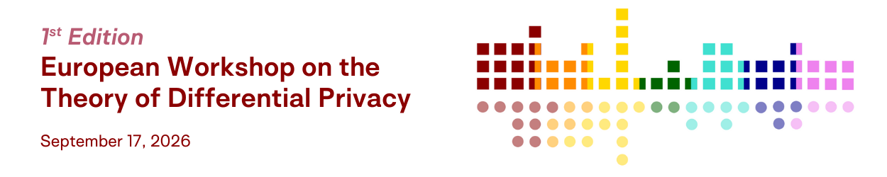

Conference highlight: EuroTDP 2026
EuroTDP is a new workshop focused on advances in the theoretical aspects of differential privacy. The vast majority of DP-focused events happen in the U.S., so the creation of this Europe-based workshop is great news for the community here!

I went there even though I wasn't sure I'd able to follow all the talks: I personally focus on DP practice and not so much theory, so my math skills are a little rusty! But my fears were mostly unfounded. It was lovely to see familiar faces, meet new people, and learn about new developments in DP. In this post, I'll highlight recent results that I learned about at the workshop and I found particularly interesting or useful for real-world deployments. This is (of course) purely based on personal opinion, not on any objective criteria.
Better guarantees against real-world attacks
Differential privacy offers strong guarantees against worst-case adversaries: someone who knows everyone in the data except one person, and is trying to learn a single bit of information about this target. This is not very realistic in practice! To make things worse, the privacy parameters used in practice are often too large to provide meaningful theoretical guarantees against such worst-case attacks. Both issues have been a recurring source of criticism from people outside the DP community.
We have ample empirical evidence that such large \(\varepsilon\) values provides much stronger guarantees against practical attacks than what the \(\varepsilon\) value would suggest. A recent (and flourishing) line of work has been trying to better quantify that phenomenon, and convert DP guarantees into bounds on the success of realistic adversaries. Such results were found for specific kinds of attacks, like membership inference or reconstruction.
At EuroTDP, Marika Swanberg presented very exciting recent work which unifies and sharpens a number of existing results in the area. Marika and her coauthors (Meenatchi Sundaram Muthu Selva Annamalai, Jamie Hayes, Borja Balle, and Adam Smith) came up with a conceptual framework to model attacks and measure their success, and proved bounds for pure DP along with a few variants. The results are both simple and very powerful; I could imagine using them in practice when trying to communicate real-world privacy guarantees to clients. Because the framework is so generic, it could likely be mapped to specific use cases with minimal difficulty.
Sad news on fully adaptive composition
There are multiple ways that DP mechanisms can be composed. Each mechanism can be run independently on the data, or you can use the output of one as the input of the next one, or you can even choose privacy parameters based on past answers. There is an ample body of work on which DP variants can be composed in which setting. A few years ago, I posted a blog post to encourage the DP community to work on open problems in this area.
These questions have an impact on what kind of interface you can build for DP software. When we built Tumult Analytics, we tried to make this interface as intuitive as we can: first, you put your data in a privacy-safe box (the "Session", initialized with a fixed privacy budget), then you interactively submit DP queries to it and directly get results. This is easy to use, but also implicitly uses fully adaptive composition: the user could submit a query, and use its results to decide which query to run and with which budget.
But fully adaptive composition was proven for some variants only, and not for the best-possible way of measuring composed privacy loss, namely \(f\)-DP. I was hoping that someone would extend existing results to \(f\)-DP: this way, we could use these results to optimize the privacy/utility trade-off further.
Long Tran, along with his coauthors Antti Koskela, Ossi Räisä, and Antti Honkela, shattered my hopes and proved the opposite result: the nice \(f\)-DP composition formula is invalid in the fully adaptive setting. The result still holds with relatively simple mechanisms (subsampled Gaussians, a key ingredient for DP-SGD), and you only need a small number of them to find a counterexample.
This has very practical implications: to support batch release use cases that maximize the privacy/utility trade-off, DP libraries should likely focus on building interfaces that aren't interactive but still easy to use. It'll be a challenge! So I'm sad, but also glad that the question is resolved.
Neat optimality result for marginal release
Publishing a large amount of counting queries (or marginals) about a sensitive dataset is a fundamental problem in differential privacy. Besides being useful on its own (e.g. for statistical data publications), it's also a key building block for more complex tasks, like synthetic data generation, or releasing hierarchical data.
A central framework used for this problem is the matrix mechanism, invented in 2010. The idea is to represent the query workload as a matrix, and use matrix factorization tricks to answer a different set of queries, and use those answers to reconstruct answers to the original queries. The question becomes: how to factorize the matrix to minimize the error for a fixed privacy budget?
Christian Lebeda and Haohua Tang presented recent work with Aleksandar Nikolov, in which they found the optimal way of solving this optimization problem. Their approach relies on a clever application of Fourier transforms, and is efficient enough to be used in practice. Very nice!
Optimal post-processing for hierarchical queries
Many data publication problems are hierarchical: for example, the U.S. Census Bureau releases statistics at different geographic levels, and it makes sense that e.g. all counts from each county of a single state should sum up to the state-level count. To minimize noise and enforce this kind of consistency constraint, scientists came up with the TopDown algorithm, used in the 2020 Decennial Census.
At EuroTDP, Ravi Kumar presented an improvement on this method called BlueDown, developed with his coauthors Badih Ghazi, Pritish Kamath, Pasin Manurangsi, and Adam Sealfon. The core idea is simple and elegant. Instead of enforcing constraints by going down the tree, BlueDown does two passes on the hierarchy: one that goes down the tree like TopDown, and the other that starts at the leaves and goes up the tree. The two passes are then reconciled.
As you can imagine, this is a vast oversimplification, and it requires many optimization tricks to make this problem tractable at the scale of U.S. Census data. But the algorithm can be run in practice, and leads to significant improvements both for error and bias. It may be a promising approach to future statistical data publication problems (providing politics don't get in the way)!
Ravi also mentioned that they started studying this hierarchical optimization question because it came up as part of the Privacy Sandbox, a now-defunct attempt to build online advertising infrastructure in a privacy-preserving way. It's nice that some exciting scientific progress came out of it, at least!